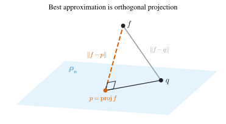
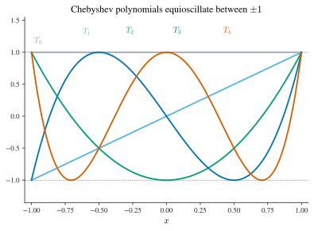
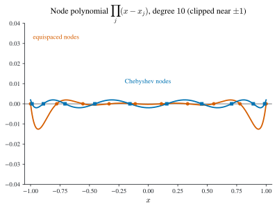
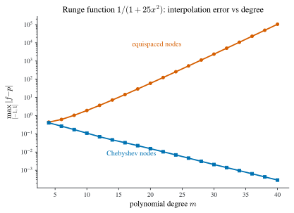

6 Approximation Theory
\[ \newcommand{\R}{\mathbb{R}} \newcommand{\C}{\mathbb{C}} \newcommand{\N}{\mathbb{N}} \newcommand{\E}{\mathbb{E}} \newcommand{\eps}{\varepsilon} \newcommand{\abs}[1]{\left\lvert #1 \right\rvert} \newcommand{\norm}[1]{\left\lVert #1 \right\rVert} \newcommand{\ninf}[1]{\left\lVert #1 \right\rVert_{\infty}} \newcommand{\ntwo}[1]{\left\lVert #1 \right\rVert_{2}} \newcommand{\none}[1]{\left\lVert #1 \right\rVert_{1}} \newcommand{\inner}[2]{\left\langle #1,\, #2 \right\rangle} \newcommand{\bigO}{\mathcal{O}} \newcommand{\dd}{\mathrm{d}} \newcommand{\diff}[2]{\frac{\mathrm{d} #1}{\mathrm{d} #2}} \newcommand{\pdiff}[2]{\frac{\partial #1}{\partial #2}} \newcommand{\spec}{\rho} \newcommand{\cond}{\kappa} \newcommand{\Span}{\operatorname{span}} \newcommand{\rank}{\operatorname{rank}} \newcommand{\tr}{\operatorname{tr}} \newcommand{\diag}{\operatorname{diag}} \newcommand{\argmax}{\operatorname*{arg\,max}} \newcommand{\argmin}{\operatorname*{arg\,min}} \newcommand{\defeq}{:=} \]
Interpolation (Chapter 1) insists that the approximant pass through the data. That is the wrong demand when the data are noisy, when there are far more samples than we want parameters, or when we care about the average error over a whole interval rather than the error at a handful of points. Approximation theory relaxes exactness to best fit: choose the member of a restricted class of functions that is closest to \(f\) in a chosen norm. Almost everything in this chapter flows from a single idea. Best approximation in an inner-product norm is orthogonal projection, and the computation collapses to a linear system that becomes trivial once the basis is orthogonal. That one observation organizes least squares, orthogonal polynomials, Chebyshev economization, Gauss quadrature, and, by way of the complex exponentials, Fourier series, the DFT, and the FFT.
6.1 Least squares and the normal equations
Suppose we are given data \((x_i,y_i)\), \(i=1,\dots,m\), with \(x_i,y_i\in\R\), and we want a function \(f\) with \(f(x_i)\approx y_i\) drawn from a restricted class (to avoid overfitting). The tractable case is a class spanned by fixed basis functions \(g_0,\dots,g_{p-1}\), \[ f_{\mathbf a}(x)=\sum_{j=0}^{p-1} a_j\,g_j(x), \tag{6.1}\] parametrized linearly by \(\mathbf a=(a_0,\dots,a_{p-1})\in\R^{p}\) (we zero-index the components). The choice \(g_j(x)=x^{j}\) recovers polynomial least squares; \(g_1(x)=x,\,g_0(x)=1\) recovers straight-line fitting. In least squares we minimize the sum of squared residuals \[ \min_{\mathbf a\in\R^{p}} F(\mathbf a),\qquad F(\mathbf a)\defeq\sum_{i=1}^{m}\bigl(f_{\mathbf a}(x_i)-y_i\bigr)^2 . \] Collect the basis values into the \(m\times p\) matrix \(G=(g_{ij})\) with \(g_{ij}=g_j(x_i)\) (rows indexed \(i=1,\dots,m\), columns \(j=0,\dots,p-1\)). The objective is then a squared Euclidean norm, \[ \sum_{i=1}^{m}\Bigl(\textstyle\sum_{j=0}^{p-1} g_{ij}a_j-y_i\Bigr)^2 =\ntwo{G\mathbf a-y}^2 , \] so least squares is nothing but the linear-algebra problem \(\min_{\mathbf a}\ntwo{G\mathbf a-y}^2\) that we already solved in Chapter 4. Its solution is the normal equations.
Theorem 6.1 (Least squares and the normal equations) Let \(G\in\R^{m\times p}\) with \(g_{ij}=g_j(x_i)\) and \(y\in\R^{m}\). Every minimizer of \(\ntwo{G\mathbf a-y}^2\) satisfies the normal equations \[ G^\top G\,\mathbf a=G^\top y . \tag{6.2}\] The matrix \(G^\top G\) is symmetric positive semidefinite; it is positive definite, so the minimizer is unique, exactly when \(G\) has rank \(p\), which requires \(m\ge p\). For polynomial least squares (\(g_j(x)=x^{j}\)), distinctness of the nodes \(x_1,\dots,x_m\) already forces \(\rank G=p\).
Proof. \(F(\mathbf a)=\ntwo{G\mathbf a-y}^2\) is a smooth convex quadratic with gradient \(\nabla F(\mathbf a)=2G^\top(G\mathbf a-y)\). Setting it to zero gives Equation 6.2. For any \(v\in\R^{p}\), \(v^\top G^\top G\,v=\ntwo{Gv}^2\ge0\), with equality iff \(Gv=0\); thus \(G^\top G\succ0\) exactly when \(G\) has trivial null space, i.e. rank \(p\). For \(g_j(x)=x^j\) the matrix \(G\) is a Vandermonde matrix, whose columns are independent when the nodes are distinct. \(\square\)
At full rank \(G^\top G\) is symmetric positive definite, so the normal equations are precisely the SPD systems that Cholesky factorization (Theorem 4.5) dispatches in half the work of general elimination. There is a catch worth flagging now: for the monomial basis \(G^\top G\) is a Hilbert-type matrix, and we will see below that its condition number (Definition 4.6) grows so fast that an orthogonal basis is the only safe way to run the projection.
Worked example: a straight-line fit. Fit \(y=a_0+a_1x\) to the five points \((0,1)\), \((1,1.8)\), \((2,3.1)\), \((3,4.2)\), \((4,5.4)\). Here \(g_0(x)=1\), \(g_1(x)=x\), so the design matrix stacks a column of ones beside the nodes, \[ G=\begin{pmatrix}1&0\\1&1\\1&2\\1&3\\1&4\end{pmatrix},\qquad G^\top G=\begin{pmatrix}m&\sum x_i\\[2pt]\sum x_i&\sum x_i^2\end{pmatrix} =\begin{pmatrix}5&10\\10&30\end{pmatrix},\qquad G^\top y=\begin{pmatrix}\sum y_i\\[2pt]\sum x_iy_i\end{pmatrix}=\begin{pmatrix}15.5\\42.2\end{pmatrix}. \] The normal equations Equation 6.2 are the \(2\times2\) system \(5a_0+10a_1=15.5\), \(10a_0+30a_1=42.2\). Its determinant is \(5\cdot30-10\cdot10=50\), and Cramer’s rule gives \(a_0=(15.5\cdot30-10\cdot42.2)/50=43/50=0.86\) and \(a_1=(5\cdot42.2-10\cdot15.5)/50=56/50=1.12\). The best-fit line is \(y=0.86+1.12\,x\). Notice that \(G^\top G\) collects only the moments \(\sum x_i^{\,k}\) of the nodes: assembling it is one pass over the data, and the same \(2\times2\) Gram matrix reappears in every straight-line fit.
Some nonlinear classes reduce to Equation 6.1 after a change of variables. To fit the power law \(f_{b,c}(x)=b\,x^{c}\) we take logarithms, \(\log y_i\approx \log b+c\,\log x_i\), which is linear in the unknowns \(a_0=\log b\) and \(a_1=c\): run straight-line least squares on the transformed pairs \((\log x_i,\log y_i)\) and recover \(b=e^{a_0}\), \(c=a_1\). One caveat: this fit minimizes the squared error in \(\log y\) rather than in \(y\), so it is not the same as nonlinear least squares on the original residuals. What it buys is that we never leave the linear world of Equation 6.1.
6.2 The geometry of function spaces
To approximate on a whole interval rather than at scattered points we need the geometry of inner-product spaces, recalled here for continuous functions.
Definition 6.1 (Inner product and the \(L^2\) inner products) An inner product \(\inner{\cdot}{\cdot}\) on a real vector space \(\mathcal V\) is a map \(\mathcal V\times\mathcal V\to\R\) that is linear and homogeneous in the first slot (\(\inner{u+v}{w}=\inner{u}{w}+\inner{v}{w}\), \(\inner{\lambda u}{v}=\lambda\inner{u}{v}\)), symmetric (\(\inner{u}{v}=\inner{v}{u}\)), and positive definite (\(\inner{u}{u}\ge0\) with equality iff \(u=0\)). It induces the norm \(\norm{u}=\sqrt{\inner{u}{u}}\) and the notion of orthogonality, \(u\perp v\iff\inner{u}{v}=0\). On \(C[a,b]\) the \(L^2\) inner product and its weighted version with a nonnegative weight \(w:(a,b)\to[0,\infty)\) are \[ \inner{f}{g}_{L^2([a,b])}=\int_a^b f(x)g(x)\,\dd x,\qquad \inner{f}{g}_{L^2([a,b];w)}=\int_a^b f(x)g(x)\,w(x)\,\dd x . \]
The dot product on \(\R^n\) is the archetype; the \(A\)-inner product \(\inner{x}{y}_A=x^\top A y\) behind conjugate gradient (Chapter 5) is another. The space \(C[a,b]\) is a vector space under pointwise operations, and the polynomials of degree \(\le n\) form a subspace \(\mathbb P_n\) with the monomials \(M_k(x)=x^{k}\), \(k=0,\dots,n\), as a basis.
Given an orthogonal collection \(v_1,\dots,v_k\) and a new vector \(u\), the Gram–Schmidt procedure appends \[ v_{k+1}=u-\sum_{i=1}^{k}\frac{\inner{u}{v_i}}{\inner{v_i}{v_i}}\,v_i , \tag{6.3}\] which is orthogonal to every \(v_i\) (check: \(\inner{v_{k+1}}{v_i}=\inner{u}{v_i}-\inner{u}{v_i}=0\)) and spans the same space as \(v_1,\dots,v_k,u\). (We write the input as \(u\), not \(w\), since \(w\) is reserved throughout for the weight of the inner product.) Fed the monomials under a weighted \(L^2\) inner product, this one formula manufactures the orthogonal polynomials of Section 6.3.
From data points to the \(L^2\) norm
Return to fitting, but now let the data fill an entire interval \([a,b]\): we approximate \(f\) by some \(f_{\mathbf a}\) of the form Equation 6.1, treating \((x,f(x))\) for every \(x\) as “infinitely many data points”. Discretize with the uniform grid \(x_i=a+ih\), \(h=(b-a)/m\), \(y_i=f(x_i)\). Up to the fixed factor \(h\) (which does not move the minimizer) the discrete objective is a Riemann sum, \[ h\sum_{i=1}^{m}\bigl(f_{\mathbf a}(x_i)-f(x_i)\bigr)^2 \;\xrightarrow[m\to\infty]{}\; \int_a^b\bigl(f_{\mathbf a}(x)-f(x)\bigr)^2\,\dd x=\norm{f_{\mathbf a}-f}_{L^2([a,b])}^2 . \] Take the same limit inside the normal equations. Multiplying Equation 6.2 by \(h\) and letting \(m\to\infty\) turns each entry into a Riemann sum, \[ [hG^\top G]_{ij}=\sum_{k=1}^{m} g_i(x_k)g_j(x_k)\,h\to\int_a^b g_i(x)g_j(x)\,\dd x=\inner{g_i}{g_j}_{L^2([a,b])}, \] \[ [hG^\top y]_{i}=\sum_{k=1}^{m} g_i(x_k)f(x_k)\,h\to\int_a^b g_i(x)f(x)\,\dd x=\inner{g_i}{f}_{L^2([a,b])} . \] So continuous least squares is solved by the Gram matrix system \(A\mathbf a=b\) with \[ A_{ij}=\inner{g_i}{g_j}_{L^2([a,b])},\qquad b_i=\inner{g_i}{f}_{L^2([a,b])}, \tag{6.4}\] after which \(f_{\mathbf a}=\sum_j a_j g_j\). Replacing every inner product by its \(w\)-weighted version handles the weighted problem \(\min_{\mathbf a}\norm{f_{\mathbf a}-f}_{L^2([a,b];w)}^2\) verbatim, with \(w\equiv1\) giving back the unweighted case. When the entries resist a closed form we fall back on numerical quadrature, a thread picked up in Section 6.5.
6.3 Orthogonal polynomials
The Gram matrix Equation 6.4 is generally dense, and for the monomial basis it is the notoriously ill-conditioned Hilbert-type matrix, whose condition number (Definition 4.6) grows explosively with its size. The remedy is to choose a basis that makes \(A\) diagonal: an orthogonal basis. Throughout, write \(\inner{\cdot}{\cdot}_w\) for \(\inner{\cdot}{\cdot}_{L^2([a,b];w)}\).
Definition 6.2 (Orthogonal polynomials) A sequence of polynomials \(\phi_0,\phi_1,\dots\) with \(\deg\phi_k=k\) is an orthogonal polynomial sequence with respect to the weight \(w\) on \([a,b]\) if \[ \inner{\phi_i}{\phi_j}_w=0\qquad\text{whenever } i\ne j . \] The sequence is orthonormal if in addition \(\inner{\phi_k}{\phi_k}_w=1\) for all \(k\), and monic if each \(\phi_k\) has leading coefficient \(1\), i.e. \(\phi_k(x)=x^{k}+\cdots\).
Gram–Schmidt on the monomials builds the monic sequence explicitly.
Proposition 6.1 (Gram–Schmidt construction) Let \(M_k(x)=x^{k}\). Set \(\phi_0=M_0=1\) and inductively \[ \phi_{k+1}=M_{k+1}-\sum_{i=0}^{k}\frac{\inner{M_{k+1}}{\phi_i}_w}{\inner{\phi_i}{\phi_i}_w}\,\phi_i . \tag{6.5}\] Then each \(\phi_k\) is monic of degree \(k\), the sequence is orthogonal with respect to \(\inner{\cdot}{\cdot}_w\), and \(\Span(\phi_0,\dots,\phi_k)=\Span(M_0,\dots,M_k)=\mathbb P_k\). Consequently, for \(k>\ell\) the polynomial \(\phi_k\) is orthogonal to every element of \(\mathbb P_\ell\).
Proof. Formula Equation 6.5 is Equation 6.3 with input \(u=M_{k+1}\) against \(\phi_0,\dots,\phi_k\), so \(\phi_{k+1}\perp\phi_i\) for \(i\le k\); by induction the whole sequence is orthogonal. Subtracting a combination of lower-degree polynomials leaves the leading \(x^{k+1}\) untouched, so \(\phi_{k+1}\) is monic of degree \(k+1\). Gram–Schmidt preserves spans, and \(\Span(M_0,\dots,M_k)=\mathbb P_k\), giving the span claim; orthogonal, hence independent, polynomials of degrees \(0,\dots,k\) form a basis of \(\mathbb P_k\). Finally, if \(k>\ell\) then \(\phi_k\perp\phi_0,\dots,\phi_\ell\), which span \(\mathbb P_\ell\), so \(\phi_k\perp\mathbb P_\ell\). \(\square\)
The payoff for least squares is immediate: with \(g_i=\phi_i\) the Gram matrix is diagonal, \(A_{ij}=\inner{\phi_i}{\phi_i}_w\,\delta_{ij}\), so the normal equations decouple one coefficient at a time.
Theorem 6.2 (Least-squares projection onto \(\mathbb P_n\)) For the weight \(w\) on \([a,b]\), the problem \(\displaystyle\min_{p\in\mathbb P_n}\norm{p-f}_w^2\) is solved by \[ p=\sum_{k=0}^{n}\frac{\inner{f}{\phi_k}_w}{\inner{\phi_k}{\phi_k}_w}\,\phi_k , \tag{6.6}\] where \(\{\phi_k\}\) is any orthogonal polynomial sequence for \(w\) on \([a,b]\).
Proof. Since \(\{f_{\mathbf a}:\mathbf a\in\R^{n+1}\}=\Span(\phi_0,\dots,\phi_n)=\mathbb P_n\), minimizing over \(\mathbb P_n\) is the interval least-squares problem in the basis \(\{\phi_k\}\). Its Gram matrix is diagonal, so the \(i\)-th normal equation reads \(\inner{\phi_i}{\phi_i}_w\,a_i=\inner{f}{\phi_i}_w\), giving \(a_i=\inner{f}{\phi_i}_w/\inner{\phi_i}{\phi_i}_w\) and Equation 6.6. \(\square\)
Formula Equation 6.6 is orthogonal projection in disguise: \(p\) is the truncated generalized Fourier series of \(f\), and the residual \(f-p\) is orthogonal to all of \(\mathbb P_n\). That single orthogonality is the whole reason \(p\) is best, by a one-line Pythagoras argument. For any competitor \(q\in\mathbb P_n\), the vector \(p-q\) lies in \(\mathbb P_n\), so \(f-p\perp p-q\), and \[ \norm{f-q}_w^2=\norm{(f-p)+(p-q)}_w^2=\norm{f-p}_w^2+\norm{p-q}_w^2\ \ge\ \norm{f-p}_w^2 , \tag{6.7}\] with equality only when \(p-q=0\). So \(p\) minimizes the distance to \(f\), and it is the unique minimizer. This is the picture the whole chapter runs on (Figure 6.1): drop \(f\) perpendicularly onto the subspace, and the foot of the perpendicular is the best approximation; every later section, least squares, Chebyshev projection, Fourier truncation, is this one diagram in different clothing.

The three-term recurrence
Running Equation 6.5 literally costs \(k+1\) inner products at step \(k\). Almost all of them are wasted, because orthogonal polynomials satisfy a three-term recurrence, the computational engine of the whole subject.
Theorem 6.3 (Three-term recurrence) Let \(\{\phi_k\}\) be the monic orthogonal polynomial sequence for \(w\) on \([a,b]\). Then \[ \phi_{k+1}(x)=(x-\alpha_k)\,\phi_k(x)-\beta_k\,\phi_{k-1}(x),\qquad k\ge1, \tag{6.8}\] with \(\phi_0=1\), \(\phi_1(x)=x-\alpha_0\), and \[ \alpha_k=\frac{\inner{x\phi_k}{\phi_k}_w}{\inner{\phi_k}{\phi_k}_w},\qquad \beta_k=\frac{\inner{\phi_k}{\phi_k}_w}{\inner{\phi_{k-1}}{\phi_{k-1}}_w}>0 . \]
Proof. The recurrence is usually quoted without proof, but the argument is short. Because \(x\phi_k\) is monic of degree \(k+1\), the difference \(x\phi_k-\phi_{k+1}\) lies in \(\mathbb P_k=\Span(\phi_0,\dots,\phi_k)\), so \(x\phi_k=\phi_{k+1}+\sum_{j=0}^{k}c_j \phi_j\). Pairing with \(\phi_i\) and using orthogonality gives \(c_i=\inner{x\phi_k}{\phi_i}_w/\inner{\phi_i}{\phi_i}_w\). Now \(\inner{x\phi_k}{\phi_i}_w= \inner{\phi_k}{x\phi_i}_w\), and for \(i\le k-2\) the polynomial \(x\phi_i\) has degree \(\le k-1\), hence is orthogonal to \(\phi_k\) by Proposition 6.1; so \(c_i=0\) there. Only \(c_k=\alpha_k\) and \(c_{k-1}\) survive. For the latter, \(x\phi_{k-1}=\phi_k+(\text{lower order})\), so \(\inner{x\phi_k}{\phi_{k-1}}_w=\inner{\phi_k}{x\phi_{k-1}}_w=\inner{\phi_k}{\phi_k}_w\), whence \(c_{k-1}=\inner{\phi_k}{\phi_k}_w/\inner{\phi_{k-1}}{\phi_{k-1}}_w=\beta_k>0\). Rearranging \(x\phi_k=\phi_{k+1}+\alpha_k\phi_k+\beta_k\phi_{k-1}\) yields Equation 6.8. \(\square\)
One could expand the recurrence into \(\phi_n(x)=a_nx^n+\dots+a_0\) and evaluate that polynomial. Do not: the coefficients \(a_0,\dots,a_n\) grow fast enough to overflow for moderate \(n\). The stable route builds \(\phi_0(x),\dots,\phi_n(x)\) from scratch through Equation 6.8, at \(\bigO(n)\) cost, given the recurrence coefficients \(\alpha_k,\beta_k\).
A worked family: \(w\equiv1\) on \([0,1]\). Take the constant weight on the unit interval, so \(\inner{f}{g}=\int_0^1 fg\,\dd x\). Symmetry about \(x=\tfrac12\) forces every \(\alpha_k=\tfrac12\), since the integrand of \(\inner{(x-\tfrac12)\phi_k}{\phi_k}\) is odd about \(\tfrac12\). Starting from \(\phi_0=1\) with \(\alpha_0=\tfrac12\) gives \(\phi_1=x-\tfrac12\). Then \(\inner{\phi_1}{\phi_1}=\tfrac1{12}\), so \(\beta_1=\tfrac1{12}\) and \[ \phi_2=(x-\tfrac12)\phi_1-\tfrac1{12}\phi_0=x^2-x+\tfrac16 . \] Next \(\inner{\phi_2}{\phi_2}=\tfrac1{180}\), so \(\beta_2=\tfrac1{15}\) and \[ \phi_3=(x-\tfrac12)\phi_2-\tfrac1{15}\phi_1=x^3-\tfrac32 x^2+\tfrac35 x-\tfrac1{20} . \] The construction guarantees orthogonality, and one checks it directly: \(\inner{\phi_3}{\phi_0}=\int_0^1\phi_3\,\dd x=0\) and \(\inner{\phi_3}{\phi_1}=\int_0^1\phi_3\,(x-\tfrac12)\,\dd x=0\). These are the monic shifted Legendre polynomials.
Taking instead \(w\equiv1\) on \([-1,1]\) gives the monic Legendre polynomials \(P_k\), which obey the tidy recurrence \(P_{k+1}(x)=x\,P_k(x)-\dfrac{k^{2}}{4k^{2}-1}\,P_{k-1}(x)\) with \(P_0=1\), \(P_1(x)=x\); there it is the symmetry of \([-1,1]\) about the origin that collapses every \(\alpha_k\) to \(0\).
Every classical family is one interval-and-weight choice fed through the same recurrence Equation 6.8; only the coefficients \(\alpha_k,\beta_k\) change. Table 6.1 collects the standard ones in monic form (so \(\phi_{k+1}=(x-\alpha_k)\phi_k-\beta_k\phi_{k-1}\)).
| Family | Interval \([a,b]\) | Weight \(w(x)\) | \(\alpha_k\) | \(\beta_k\ (k\ge1)\) |
|---|---|---|---|---|
| Legendre | \([-1,1]\) | \(1\) | \(0\) | \(\dfrac{k^2}{4k^2-1}\) |
| Chebyshev \(T\) | \([-1,1]\) | \(\dfrac{1}{\sqrt{1-x^2}}\) | \(0\) | \(\tfrac12\) if \(k=1\), else \(\tfrac14\) |
| Chebyshev \(U\) | \([-1,1]\) | \(\sqrt{1-x^2}\) | \(0\) | \(\tfrac14\) |
| Laguerre | \([0,\infty)\) | \(e^{-x}\) | \(2k+1\) | \(k^2\) |
| Hermite | \((-\infty,\infty)\) | \(e^{-x^2}\) | \(0\) | \(\tfrac{k}{2}\) |
6.4 Chebyshev polynomials and the minimax property
The single most useful orthogonal family in numerical analysis is the Chebyshev polynomials, valued for the way they equioscillate on \([-1,1]\). We define them trigonometrically and only later notice that they are orthogonal polynomials.
Definition 6.3 (Chebyshev polynomials) For \(x\in[-1,1]\) the \(n\)-th Chebyshev polynomial is \[ T_n(x)=\cos\!\bigl(n\arccos x\bigr). \tag{6.9}\]
Nothing in Equation 6.9 looks like a polynomial: it is a cosine wrapped around an arccosine. That it nonetheless is one falls out of a three-term recurrence, \[ T_{n+1}(x)=2x\,T_n(x)-T_{n-1}(x),\qquad T_0\equiv1,\ T_1(x)=x . \tag{6.10}\]
Proof. Put \(\theta=\arccos x\), so \(x=\cos\theta\). The identity \(\cos((n{+}1)\theta)+\cos((n{-}1)\theta)=2\cos\theta\cos(n\theta)\) rearranges to \[ T_{n+1}(x)=\cos((n+1)\theta)=2\cos\theta\cos(n\theta)-\cos((n-1)\theta)=2x\,T_n(x)-T_{n-1}(x). \] Starting from the polynomials \(T_0=1\), \(T_1=x\), the recurrence produces a polynomial at every step. \(\square\)
From Equation 6.9 we read off \(\abs{T_n(x)}\le1\) on \([-1,1]\), and the structure of \(\cos\) pins the zeros and extrema exactly. The zeros, called the Chebyshev nodes, solve \(n\arccos x=(j-\tfrac12)\pi\): \[ x_j=\cos\!\Bigl(\frac{2j-1}{2n}\pi\Bigr),\qquad j=1,\dots,n. \tag{6.11}\] The extrema, where \(n\arccos x=j\pi\), sit at \(x=\cos(j\pi/n)\), \(j=0,\dots,n\), and there \(T_n=\pm1\) with alternating sign. That alternation of \(+1\) and \(-1\) across the interval (Figure 6.2) is the equioscillation property.

The orthogonality hides in a change of variables.
Proposition 6.2 (Chebyshev orthogonality) The \(T_n\) are orthogonal on \([-1,1]\) with respect to the weight \(w(x)=\dfrac{1}{\sqrt{1-x^2}}\).
Proof. It is a standard fact that the cosines are orthogonal on \([0,\pi]\): for \(m\ne n\), \(\int_0^{\pi}\cos(my)\cos(ny)\,\dd y=0\) (expand the product as \(\tfrac12[\cos((m{+}n)y)+\cos((m{-}n)y)]\) and integrate, using \(\sin(k\pi)=0\)). Substituting \(y=\arccos x\), so that \(\dd y=-\dd x/\sqrt{1-x^2}\), carries this straight to \(\int_{-1}^{1}T_m(x)T_n(x)\,(1-x^2)^{-1/2}\,\dd x=\inner{T_m}{T_n}_{L^2([-1,1];w)}=0\). \(\square\)
The recurrence Equation 6.10 doubles the leading coefficient at each step, so \(T_n\) has leading term \(2^{\,n-1}x^{n}\) for \(n\ge1\) and is not monic. Its monic rescaling is \[ \tilde T_n(x)=\frac{1}{2^{\,n-1}}\,T_n(x)\quad(n\ge1),\qquad \tilde T_0=1, \tag{6.12}\] with \(\max_{[-1,1]}\abs{\tilde T_n}=2^{-(n-1)}\). To work on a general \([a,b]\), push everything through the affine map \(\tilde x=\tfrac12[(b-a)x+a+b]\), which sends \([-1,1]\) to \([a,b]\); nodes, weight, and polynomials transport unchanged in form.
What makes the monic Chebyshev polynomial special is that it is the flattest monic polynomial on \([-1,1]\): among all monic degree-\(n\) polynomials it has the smallest maximum modulus.
Theorem 6.4 (Chebyshev minimax property) Let \(\tilde{\mathbb P}_n\) be the monic polynomials of degree \(n\). For every \(\tilde p_n\in\tilde{\mathbb P}_n\), \[ \frac{1}{2^{\,n-1}}=\max_{x\in[-1,1]}\abs{\tilde T_n(x)}\ \le\ \max_{x\in[-1,1]}\abs{\tilde p_n(x)} . \]
Proof. An equioscillation argument. Suppose some monic \(\tilde p_n\) had strictly smaller maximum modulus than \(\tilde T_n\). Then \(\tilde T_n-\tilde p_n\in\mathbb P_{n-1}\) would inherit the sign of \(\tilde T_n\) at each of its \(n+1\) alternating extrema, so it would change sign \(n\) times and carry \(n\) zeros, impossible for a nonzero polynomial of degree \(\le n-1\). Hence no such \(\tilde p_n\) exists. \(\square\)
The next two subsections are both applications of this one inequality: first to where interpolation nodes should go, then to shaving the degree off a series.
Where to place interpolation nodes
Chapter 1 left one question dangling: given the freedom to place interpolation nodes anywhere, where should they go? The minimax inequality answers it. Recall (Theorem 1.2) that the Lagrange interpolant \(p\in\mathbb P_m\) of \(f\in C^{m+1}[a,b]\) at distinct nodes \(x_0,\dots,x_m\) has error \[ f(x)-p(x)=\frac{f^{(m+1)}(\xi)}{(m+1)!}\prod_{i=0}^{m}(x-x_i), \qquad \norm{f-p}_{L^\infty[a,b]}\le\frac{\norm{f^{(m+1)}}_{L^\infty}}{(m+1)!}\,\norm{q_{\mathbf x}}_{L^\infty}, \tag{6.13}\] where \(q_{\mathbf x}(x)=\prod_{i=0}^m(x-x_i)\) is the node polynomial. The derivative factor is out of our hands, but \(\norm{q_{\mathbf x}}_{L^\infty}\) is entirely ours to shrink through node placement. Equispaced nodes are the wrong choice: \(q_{\mathbf x}\) then swings wildly near the ends, which is the Runge phenomenon that derailed high-degree interpolation in Figure 1.2. Since \(q_{\mathbf x}\) is monic of degree \(m+1\), Theorem 6.4 names its best possible placement outright: make it the monic Chebyshev polynomial \(\tilde T_{m+1}\), i.e. take the nodes to be the zeros of \(T_{m+1}\).

Concretely, for \(m+1\) nodes use the zeros Equation 6.11 of \(T_{m+1}\), \[ x_j=\cos\!\Bigl(\frac{2j+1}{2(m+1)}\pi\Bigr),\qquad j=0,\dots,m . \] With this choice \(q_{\mathbf x}\) and \(\tilde T_{m+1}\) are both monic of degree \(m+1\) with the same zeros, hence equal, so \(\norm{q_{\mathbf x}}_{L^\infty}=2^{-m}\) (Figure 6.3). Substituting into Equation 6.13 turns a bound that could blow up into one that shrinks with \(m\).
Theorem 6.5 (Chebyshev-node interpolation error) Let \(f\in C^{m+1}[-1,1]\) and let \(p\) be its Lagrange interpolant at the Chebyshev nodes \(x_j=\cos\!\bigl(\tfrac{2j+1}{2(m+1)}\pi\bigr)\), \(j=0,\dots,m\). Then \[ \norm{f-p}_{L^\infty[-1,1]}\le\frac{\norm{f^{(m+1)}}_{L^\infty[-1,1]}}{2^{m}\,(m+1)!}. \] On a general interval \([a,b]\), using the transported Chebyshev nodes, \[ \norm{f-p}_{L^\infty[a,b]}\le\Bigl(\frac{b-a}{2}\Bigr)^{m+1}\frac{\norm{f^{(m+1)}}_{L^\infty[a,b]}}{2^{m}\,(m+1)!}. \]
The extra factor \(2^{-m}\) over the generic bound is precisely the equioscillation dividend. Good node placement converts interpolation from a method that can diverge on equispaced nodes into one that converges geometrically for smooth \(f\): the node-choice payoff promised back in Chapter 1. Figure 6.4 makes the contrast concrete on the Runge function \(1/(1+25x^2)\): the equispaced error climbs from \(0.44\) at degree \(4\) to about \(10^{5}\) at degree \(40\), while the Chebyshev error falls geometrically from \(0.40\) to about \(3\times10^{-4}\) over the same range. Same function, same degrees, opposite fates, decided entirely by where the nodes sit.

Trimming a polynomial’s degree
The same inequality shaves the degree off a polynomial we already hold. Suppose \(p_n(x)=\sum_{k=0}^n a_k x^k\) has a larger degree \(n\) than we want (a Taylor polynomial truncated high, say), and we seek a lower-degree \(p_m\in\mathbb P_m\), \(m<n\), staying close on \([-1,1]\). Work greedily, dropping one degree at a time; it is enough to understand the first step, choosing \(p_{n-1}\in\mathbb P_{n-1}\) to minimize \(\max_{[-1,1]}\abs{p_n-p_{n-1}}\). Assuming \(a_n\ne0\), the polynomial \((p_n-p_{n-1})/a_n\) is monic of degree \(n\), so minimizing the maximum is the same as minimizing \(\abs{a_n}\max_{[-1,1]}\abs{(p_n-p_{n-1})/a_n}\), which by Theorem 6.4 is smallest exactly when \((p_n-p_{n-1})/a_n=\tilde T_n\). Solving, \[ p_{n-1}(x)=p_n(x)-a_n\,\tilde T_n(x) \tag{6.14}\] subtracts the leading coefficient times the monic Chebyshev polynomial. This is economization, and Equation 6.14 even does the right thing when \(a_n=0\) (nothing), so no case split is needed. Iterating from degree \(n\) down to \(m\) yields a low-degree approximation whose worst-case error on \([-1,1]\) is controlled by the discarded \(\abs{a_k}/2^{k-1}\).
Worked example: economizing \(e^x\). Truncate the Maclaurin series to degree \(4\), \(p_4(x)=1+x+\tfrac12x^2+\tfrac16x^3+\tfrac1{24}x^4\), so \(a_4=\tfrac1{24}\). The monic degree-\(4\) Chebyshev polynomial is \(\tilde T_4=T_4/2^{3}=x^4-x^2+\tfrac18\) (from \(T_4=8x^4-8x^2+1\)). Applying Equation 6.14 once, \[ p_3=p_4-a_4\,\tilde T_4 =p_4-\tfrac1{24}\Bigl(x^4-x^2+\tfrac18\Bigr) =\frac{191}{192}+x+\frac{13}{24}x^2+\frac16x^3 , \] which drops the \(x^4\) term while nudging the constant (\(1\to\tfrac{191}{192}\)) and the quadratic coefficient (\(\tfrac12\to\tfrac{13}{24}\)). The price of removing degree \(4\) is the added worst-case error \[ \abs{a_4}\max_{[-1,1]}\abs{\tilde T_4}=\frac{1}{24}\cdot\frac{1}{2^{3}}=\frac{1}{192}\approx0.0052 . \] Contrast the naive move of simply deleting \(a_4x^4\) (the plain degree-\(3\) Taylor polynomial): that discards a term of size \(\abs{a_4}\max_{[-1,1]}\abs{x^4}=\tfrac1{24}\approx0.042\). Economization pays only \(2^{-3}\) of the naive penalty for the same degree cut, exactly the flatness dividend of Theorem 6.4, because it spreads the sacrificed term evenly across \([-1,1]\) instead of dumping it all at the endpoints.
6.5 Orthogonal-polynomial zeros as quadrature nodes
Orthogonal polynomials do double duty: their zeros are the optimal quadrature nodes. This rule, Gauss quadrature, approximates \(\int_a^b g(x)\,w(x)\,\dd x\approx\sum_{i=0}^{m}w_i\,g(x_i)\). The Legendre case \(w\equiv1\) on \([-1,1]\) was proved as Theorem 2.1; below we re-run the same division argument for the general weight \(w\) on \([a,b]\), reading the nodes as the zeros of \(\phi_{m+1}\) and the weights as the inner products \(\inner{L_i}{1}_w\).
Theorem 6.6 (Gauss quadrature (approximation-theory form)) Let \(a<x_0<\dots<x_m<b\) be the zeros of \(\phi_{m+1}\), the degree-\((m+1)\) orthogonal polynomial for the weight \(w\) on \([a,b]\), and set \(\mathbf x=(x_0,\dots,x_m)\). With the weights \[ w_i=\int_a^b L_i(x;\mathbf x)\,w(x)\,\dd x=\inner{L_i}{1}_w,\qquad i=0,\dots,m, \] where \(L_i\) is the Lagrange basis for the nodes \(\mathbf x\), we have \[ \int_a^b g(x)\,w(x)\,\dd x=\sum_{i=0}^{m}w_i\,g(x_i)\qquad\text{for all } g\in\mathbb P_{2m+1}. \]
Proof. For \(g\in\mathbb P_m\) exactness is automatic: \(g\) equals its own Lagrange interpolant \(\sum_i g(x_i)L_i\) at the \(m+1\) nodes, so \(\int_a^b g\,w\,\dd x=\sum_i g(x_i)\inner{L_i}{1}_w =\sum_i w_i\,g(x_i)\). For the remainder, let \(g\in\mathbb P_{2m+1}\) and divide by \(\phi_{m+1}\): \[ g(x)=\phi_{m+1}(x)\,Q(x)+R(x),\qquad \deg Q\le m,\ \deg R\le m. \] Integrating against \(w\), the first term is \(\inner{\phi_{m+1}}{Q}_w\), which vanishes because \(Q\in\mathbb P_m\) and \(\phi_{m+1}\perp\mathbb P_m\) (Proposition 6.1); so \(\int_a^b g\,w\,\dd x=\int_a^b R\,w\,\dd x=\sum_i w_i R(x_i)\), the last step by the degree-\(m\) exactness just shown. Finally \(\phi_{m+1}(x_i)=0\) at every node, so \(g(x_i)=R(x_i)\), giving \(\sum_i w_i g(x_i)=\sum_i w_i R(x_i)=\int_a^b g\,w\,\dd x\). This is the division argument of Theorem 2.1, re-run with \(\phi_{m+1}\) and the general weight \(w\) in place of the Legendre polynomial \(P_n\) and \(w\equiv1\). \(\square\)
The remarkable part, exactness all the way to degree \(2m+1\) rather than just \(m\), is special to the orthogonal-polynomial nodes, as the proof above shows. This is exactly what we need to run the projection Equation 6.6 in practice, whose coefficients are inner products \(\inner{h_1}{h_2}_w=\int_a^b h_1 h_2\,w\,\dd x\) that we evaluate as \[ \inner{h_1}{h_2}_w\approx\sum_{i=0}^{m}w_i\,h_1(x_i)h_2(x_i) . \] Whenever \(h_1h_2\in\mathbb P_{2m+1}\), as it is for the low-degree orthogonal polynomials themselves, this is not an approximation but an equality, a fact the next subsection turns into a surprise.
Interpolation is projection at the Gauss nodes
Interpolation and least-squares projection look unrelated, yet Gauss quadrature makes them coincide at the right sampling rate. Build the discrete inner product from the Gauss nodes and weights for \(w\), \[ \inner{g}{h}_w^{(m)}\defeq\sum_{i=0}^{m}g(x_i)\,h(x_i)\,w_i , \] and replace the true inner products in Equation 6.6 by it. The result is a computable stand-in for the projection \(p\). The surprise is what happens when \(m=n\).
Theorem 6.7 (Discrete projection equals interpolation) With the Gauss nodes and weights for \(w\) on \([a,b]\), let \[ q=\sum_{k=0}^{n}\frac{\inner{f}{\phi_k}_w^{(n)}}{\inner{\phi_k}{\phi_k}_w^{(n)}}\,\phi_k\in\mathbb P_n . \] Then \(q\) is exactly the Lagrange interpolant of \(f\) at the nodes \(x_0,\dots,x_n\); that is, \(q(x_i)=f(x_i)\) for all \(i\).
Proof. Let \(\ell\in\mathbb P_n\) be the Lagrange interpolant, \(\ell(x_i)=f(x_i)\). Both \(\phi_k^2\) and \(\ell\phi_k\) lie in \(\mathbb P_{2n}\), on which the \((n{+}1)\)-node Gauss rule Theorem 6.6 is exact, so for these products the discrete inner product equals the true one: \(\inner{\phi_k}{\phi_k}_w^{(n)}=\inner{\phi_k}{\phi_k}_w\) and \(\inner{\ell}{\phi_k}_w^{(n)}=\inner{\ell}{\phi_k}_w\). Meanwhile the discrete inner product only ever sees node values, and \(f\) and \(\ell\) agree at every node, so it cannot tell them apart: \(\inner{f}{\phi_k}_w^{(n)}=\inner{\ell}{\phi_k}_w^{(n)}\). Chaining these, \(\inner{f}{\phi_k}_w^{(n)}=\inner{\ell}{\phi_k}_w\) and \(\inner{\phi_k}{\phi_k}_w^{(n)}=\inner{\phi_k}{\phi_k}_w\), so \(q=\sum_k \inner{\ell}{\phi_k}_w/\inner{\phi_k}{\phi_k}_w\,\phi_k\), which by Theorem 6.2 is the true projection of \(\ell\in\mathbb P_n\) onto \(\mathbb P_n\), namely \(\ell\) itself. Hence \(q=\ell\). \(\square\)
Read the other way, Lagrange interpolation is a “lazy” evaluation of Gauss quadrature, one that hands back the interpolant as a combination of orthogonal polynomials rather than of Lagrange basis functions. In the Chebyshev case that combination is a discrete cosine transform.
6.6 Rational approximation
Polynomials cannot reproduce poles or asymptotes; rational functions can, and often approximate far more efficiently for the same number of coefficients. A rational function of degree \(N\) is \(r=p/q\) with \(\deg p+\deg q=N\). Two constructions follow, one anchored at a point and one balanced across an interval.
Padé approximation: matching a power series
Padé approximation is the rational cousin of the Taylor polynomial: match as many derivatives at a base point (take it to be \(x=0\)) as the free parameters permit.
Definition 6.4 (Padé approximant) Write \(p(x)=\sum_{k=0}^{n}p_k x^{k}\) and \(q(x)=\sum_{k=0}^{m}q_k x^{k}\) (pad both coefficient sequences with zeros past their degrees). Normalizing \(q_0=1\) leaves \(n+m+1=N+1\) free parameters. The \([n/m]\) Padé approximant of \(f\) is the rational \(r=p/q\) chosen so that \[ r^{(k)}(0)=f^{(k)}(0),\qquad k=0,\dots,N . \]
To build it, expand \(f(x)=\sum_{k\ge0}a_k x^{k}\) and write \(f-r=(fq-p)/q\). Matching the first \(N\) derivatives of \(f-r\) at \(0\) is the same as killing the terms of order \(0,\dots,N\) in the numerator \(fq-p\). Since \(fq-p=\sum_{k\ge0}\bigl(\sum_{i=0}^{k}a_i q_{k-i}-p_k\bigr)x^{k}\), the conditions are the linear equations \[ p_k=\sum_{i=0}^{k}a_i q_{k-i},\qquad k=0,\dots,N, \tag{6.15}\] which are \(N+1\) equations in the \(N+1\) unknowns \(p_0,\dots,p_n,q_1,\dots,q_m\). Stacking them (with \(q_0=1\) moved to the right-hand side) is an ordinary square linear system \[ A\begin{pmatrix}\mathbf p\\ \mathbf q\end{pmatrix}=\mathbf a,\qquad \mathbf a=(a_0,\dots,a_N)^\top, \tag{6.16}\] whose matrix just reads its entries off Equation 6.15: a selector block picking out \(p_0,\dots,p_n\) beside a lower-triangular Toeplitz block of the coefficients \(a_i\). Solving it and forming \(r=p/q\) finishes the job.
Worked example: the \([1/1]\) Padé of \(e^x\). Here \(n=m=1\), \(N=2\), and the Maclaurin coefficients are \(a_0=1\), \(a_1=1\), \(a_2=\tfrac12\). With \(q_0=1\), the conditions Equation 6.15 for \(k=0,1,2\) read: \(p_0=a_0q_0=1\); the \(k=2\) equation is \(0=a_1q_1+a_2q_0\) (both \(p_2\) and \(q_2\) vanish), so \(q_1=-a_2/a_1=-\tfrac12\); and \(k=1\) gives \(p_1=a_0q_1+a_1q_0=-\tfrac12+1=\tfrac12\). Hence \[ r(x)=\frac{1+\tfrac12 x}{1-\tfrac12 x}=\frac{2+x}{2-x}. \] As a check, \(\bigl(1+\tfrac12 x\bigr)\bigl(1+\tfrac12 x+\tfrac14 x^2+\cdots\bigr) =1+x+\tfrac12 x^2+\tfrac14 x^3+\cdots\) agrees with \(e^x=1+x+\tfrac12 x^2+\tfrac16 x^3+\cdots\) through order \(x^2\), exactly as \(N=2\) demands, and first parts ways at \(x^3\).
Chebyshev–Padé: uniform quality on \([-1,1]\)
Padé, like Taylor, is anchored at one point, so its accuracy is uneven across \([-1,1]\). For roughly uniform rational quality there (reduce a general \([a,b]\) by the affine map of Section 6.4), swap the power series for Chebyshev expansions: \[ r(x)=\frac{\sum_{k=0}^{n}p_k T_k(x)}{\sum_{k=0}^{m}q_k T_k(x)},\qquad q_0=1, \] and write \(f(x)=\sum_{k\ge0}a_k T_k(x)\) with \(a_k=\inner{f}{T_k}_w/\inner{T_k}{T_k}_w\) under the Chebyshev weight \(w=1/\sqrt{1-x^2}\). The numerator coefficients \(\inner{f}{T_k}_w\) come from Gauss–Chebyshev quadrature (Section 6.5); the denominators are universal, \[ \inner{T_k}{T_k}_w=\begin{cases}\pi,&k=0,\\[2pt]\pi/2,&k\ge1.\end{cases} \] As before we force the low orders of \(fq-p\) to vanish, but now a product of two basis elements is no longer a single basis element. The one identity that rescues the bookkeeping is the cosine product-to-sum rule \[ T_iT_j=\tfrac12\bigl[T_{i+j}+T_{\abs{i-j}}\bigr], \tag{6.17}\] which lets the product \(fq\) be re-expanded in the \(T_k\). Collecting the coefficient of each \(T_k\) in \(fq-p\) and zeroing orders \(0,\dots,N\) produces the same block system as Padé, Equation 6.16, with one difference: each product now feeds in through three index-shift contributions (\(i+j\), \(i-j\), and \(j-i\)) from Equation 6.17 rather than a single one. Solving it delivers the Chebyshev-rational approximant.
6.7 Trigonometric approximation and the FFT
Periodic functions call for a periodic basis. Sines and cosines, repackaged as complex exponentials, are orthogonal, so best approximation is once more a projection, and the resulting coefficient computation is a discrete Fourier transform that the FFT evaluates in near-linear time.
Fourier series
Consider \(f:[-\pi,\pi]\to\R\), extended \(2\pi\)-periodically to \(\R\) (\(f(x+2\pi k)=f(x)\)). Throughout this and the following subsections \(i\) denotes the imaginary unit (\(i^2=-1\)). The functions \[ \phi_k(x)=\cos(kx)\ (k=0,\dots,n),\qquad \psi_k(x)=\sin(kx)\ (k=1,\dots,n) \] are orthogonal under \(\inner{\cdot}{\cdot}=\inner{\cdot}{\cdot}_{L^2([-\pi,\pi])}\): all cross inner products vanish, and \[ \inner{\phi_0}{\phi_0}=2\pi,\qquad \inner{\phi_k}{\phi_k}=\inner{\psi_k}{\psi_k}=\pi\ (k\ge1), \] verified as in Proposition 6.2.
Definition 6.5 (Trigonometric polynomials) \(\mathcal T_n\defeq\Span(\phi_0,\dots,\phi_n,\psi_1,\dots,\psi_n)\) is the space of trigonometric polynomials of degree \(\le n\); a member has degree \(n\) when the coefficient of \(\phi_n\) or \(\psi_n\) is nonzero.
Orthogonality makes the best \(\mathcal T_n\)-approximation one more projection (Theorem 6.2 in trigonometric clothing): \(\min_{\phi\in\mathcal T_n}\norm{\phi-f}^2\) is solved by \[ \phi(x)=\frac{a_0}{2}+\sum_{k=1}^{n}\bigl[a_k\cos(kx)+b_k\sin(kx)\bigr], \tag{6.18}\] \[ a_k=\frac1\pi\int_{-\pi}^{\pi} f(x)\cos(kx)\,\dd x\ (k\ge0),\qquad b_k=\frac1\pi\int_{-\pi}^{\pi} f(x)\sin(kx)\,\dd x\ (k\ge1) . \] These are the truncated Fourier series coefficients, each \(a_k=\inner{f}{\phi_k}/\inner{\phi_k}{\phi_k}\) (the \(a_0/2\) absorbs \(\inner{\phi_0}{\phi_0}=2\pi\)).
The real basis becomes much cleaner over the complex numbers. Extend the inner product to \(g,h:[-\pi,\pi]\to\C\) by \[ \inner{g}{h}=\int_{-\pi}^{\pi} g(x)\,\overline{h(x)}\,\dd x, \] linear in the first slot with conjugate symmetry \(\inner{g}{h}=\overline{\inner{h}{g}}\) (hence conjugate-linear in the second). The exponentials \(e_k(x)=e^{ikx}\), \(k\in\mathbb{Z}\), are orthogonal: \[ \inner{e_k}{e_l}=\int_{-\pi}^{\pi} e^{i(k-l)x}\,\dd x=2\pi\,\delta_{kl}, \] since for \(k\ne l\) the antiderivative \(e^{i(k-l)x}/[i(k-l)]\) is \(2\pi\)-periodic.
Theorem 6.8 (Real and complex trigonometric spans coincide) \(\mathcal T_n\subset\mathcal T_n^{\C}\defeq\Span_{\C}(\phi_0,\dots,\phi_n,\psi_1,\dots,\psi_n)=\Span_{\C}(e_{-n},\dots,e_n)\).
Proof. \(\phi_0=e_0\), so it is enough to show \(\Span(\phi_k,\psi_k)=\Span(e_k,e_{-k})\) for \(k\ge1\). Euler’s formula \(e^{\pm ikx}=\cos(kx)\pm i\sin(kx)\) puts \(e_{\pm k}\in\Span(\phi_k,\psi_k)\); conversely \(\cos(kx)=(e^{ikx}+e^{-ikx})/2\) and \(\sin(kx)=(e^{ikx}-e^{-ikx})/(2i)\) put \(\phi_k,\psi_k\in\Span(e_k,e_{-k})\). \(\square\)
Consequently \(\min_{\phi\in\mathcal T_n^{\C}}\norm{\phi-f}^2\) is solved by \[ \phi(x)=\sum_{k=-n}^{n} c_k e^{ikx},\qquad c_k=\frac{1}{2\pi}\int_{-\pi}^{\pi} f(x)\,e^{-ikx}\,\dd x . \tag{6.19}\] For real \(f\) the two minimizers agree, and the coefficients convert by \[ c_0=\frac{a_0}{2},\quad c_k=\frac{a_k-ib_k}{2},\quad c_{-k}=\frac{a_k+ib_k}{2}, \qquad a_k=c_k+c_{-k},\quad b_k=i(c_k-c_{-k}). \]
Computing the coefficients: the trapezoidal rule
The integrals for \(a_k,b_k,c_k\) usually need numerical quadrature, and for periodic integrands the trapezoidal rule is the natural choice. On the grid \(x_k=-\pi+kh\), \(h=2\pi/(M+1)\), \[ \int_{-\pi}^{\pi} g(x)\,\dd x\approx\frac h2\bigl[g(x_0)+g(x_{M+1})\bigr]+h\sum_{k=1}^{M}g(x_k), \] which is exact for every trigonometric polynomial in \(\mathcal T_M\), the periodic counterpart of Gauss quadrature’s exactness on \(\mathbb P_{2M+1}\). When \(g\) is \(2\pi\)-periodic, \(g(x_0)=g(x_{M+1})\) and the rule collapses to the left-endpoint Riemann sum \(h\sum_{k=0}^{M}g(x_k)\), which is why the trapezoidal rule converges spectrally fast for smooth periodic integrands. Taking \(M\gg n\) makes the coefficient errors negligible.
Discrete least squares on a grid
Often we hold only a sampling of a periodic \(f\) on the equispaced grid \[ x_j=-\pi+jh,\qquad j=0,\dots,2m-1,\qquad h=\frac{\pi}{m}, \] with \(y_j=f(x_j)\) (the point \(x_{2m}=\pi\) is redundant by periodicity). Fit these \(2m\) points by the exponentials \(e_k(x)=e^{ikx}\) in discrete least squares. On the grid the exponentials alias: for all \(j\), \[ e_{k+2m}(x_j)=e^{ikx_j}\,e^{i\,2m(-\pi+j\pi/m)}=e^{ikx_j}\,e^{-2\pi i m}e^{2\pi i j}=e_k(x_j), \] so more than \(2m\) consecutive frequencies would be redundant. Taking \(k=-m,\dots,m-1\) gives \(2m\) parameters for \(2m\) points, enough to fit exactly. The normal equations \(A\mathbf c=\mathbf b\) use the discrete inner product \(A_{kl}=\sum_{j}\overline{e_k(x_j)}\,e_l(x_j)\), \(\mathbf b_k=\sum_j\overline{e_k(x_j)}\,y_j\), and the matrix is a scaled identity: \[ A_{kl}=\sum_{j=0}^{2m-1}e^{i(l-k)x_j}=\sum_{j=0}^{2m-1}\Bigl(e^{\frac{2\pi i(l-k)}{2m}}\Bigr)^{j}=2m\,\delta_{kl}, \] because the geometric sum vanishes unless \(k-l\) is a multiple of \(2m\), which inside \(-m,\dots,m-1\) happens only at \(k=l\). Hence \(A=2m\,I\) and \(\mathbf c=\tfrac{1}{2m}\mathbf b\): \[ c_k=\frac{e^{ik\pi}}{2m}\sum_{j=0}^{2m-1}e^{-\frac{2\pi i kj}{2m}}\,y_j,\qquad k=-m,\dots,m-1, \tag{6.20}\] with fit \(\phi(x)=\sum_{k=-m}^{m-1}c_k e^{ikx}\). Zeroing the high-frequency \(c_k\) afterward recovers the least-squares fit in any smaller basis \(e_{-n},\dots,e_n\), \(n<m\). The entire cost lives in the sums Equation 6.20.
The discrete Fourier transform
The sums in Equation 6.20 are a discrete Fourier transform (DFT). Clear the negative indices first using the aliasing \(e_{k+2m}=e_k\): for \(k=0,\dots,2m-1\) set \[ \tilde c_k=\frac{e^{ik\pi}}{2m}\sum_{j=0}^{2m-1}e^{-\frac{2\pi i kj}{2m}}\,y_j, \] and recover the wanted coefficients by restacking, \(c_0=\tilde c_0,\dots,c_{m-1}=\tilde c_{m-1}\) and \(c_{-m}=\tilde c_m,\dots,c_{-1}=\tilde c_{2m-1}\). Peeling off the prefactor, define \[ \hat y_k=\sum_{j=0}^{2m-1}e^{-\frac{2\pi i kj}{2m}}\,y_j,\qquad k=0,\dots,2m-1, \tag{6.21}\] so \(\tilde c_k=\tfrac{e^{ik\pi}}{2m}\hat y_k\). With \(N=2m\), Equation 6.21 is the matrix-vector product in the following definition.
Definition 6.6 (Discrete Fourier transform) The DFT of \(y\in\C^{N}\) is \(\hat y=\mathbf F y\), where \(\mathbf F=(F_{kl})\) is the \(N\times N\) matrix with zero-indexed entries \[ F_{kl}=e^{-\frac{2\pi i kl}{N}} . \]
The entire pipeline for discrete trigonometric least squares is now: (i) form \(\hat y=\mathbf F y\); (ii) set \(\tilde c_k=\tfrac{e^{ik\pi}}{2m}\hat y_k\); (iii) restack to get \(\mathbf c\); (iv) read off \(\phi(x)=\sum_{k=-n}^{n}c_k e^{ikx}\). A naive matvec by \(\mathbf F\) costs \(\bigO(N^2)\), which the next subsection removes.
Computing the DFT in \(\bigO(N\log N)\)
Forming \(\mathbf F\) and multiplying costs \(\bigO(N^2)\), but the DFT never actually needs the explicit matrix. The fast Fourier transform (FFT) computes \(\hat y=\mathbf F^{(N)}y\) in \(\bigO(N\log N)\). It is one of the most consequential algorithms in scientific computing, with a long history (a version was already known to Gauss) and a modern popularization by Cooley and Tukey; whenever periodic functions, trigonometric polynomials, or Fourier coefficients appear, the practical aim is to reduce the work to the right FFTs.
Assume \(N=2^{n}\) (a general \(N\) reduces to this case). Split the DFT sum Equation 6.21 into even- and odd-indexed terms, writing \(\omega_N=e^{-2\pi i/N}\) and using \(\omega_N^{2}=\omega_{N/2}\): \[ \hat y_k=\sum_{l=0}^{N-1}\omega_N^{\,kl}y_l =\sum_{r=0}^{N/2-1}\omega_{N/2}^{\,kr}y_{2r} +\omega_N^{\,k}\sum_{r=0}^{N/2-1}\omega_{N/2}^{\,kr}y_{2r+1}. \] Each sum is a DFT of length \(N/2\), on the even part \(y^{(e)}\) and the odd part \(y^{(o)}\). Let \(\mathbf D^{(N)}=\diag(\omega_N^{0},\dots,\omega_N^{N/2-1})\) hold the twiddle factors and set \(u=\mathbf F^{(N/2)}y^{(e)}\), \(v=\mathbf D^{(N)}\mathbf F^{(N/2)}y^{(o)}\). Because the length-\(N/2\) transforms are \(N/2\)-periodic in \(k\), the two halves of \(\hat y\) reuse these same vectors: \[ \hat y_k=u_k+v_k,\qquad \hat y_{k+N/2}=u_k-v_k,\qquad k=0,\dots,N/2-1 . \tag{6.22}\] The \(\pm\) pair Equation 6.22 is the butterfly: two half-size DFTs, one diagonal matvec, and \(N\) additions.
To compute \(\hat y=\mathbf F^{(N)}y\):
- If \(N=1\), return \(\hat y=y\).
- Otherwise split \(y\) into its even part \(y^{(e)}\) and odd part \(y^{(o)}\).
- Recursively compute \(u=\mathbf F^{(N/2)}y^{(e)}\) and \(v=\mathbf D^{(N)}\bigl[\mathbf F^{(N/2)}y^{(o)}\bigr]\).
- Return \(\hat y=\bigl(\begin{smallmatrix}u+v\\ u-v\end{smallmatrix}\bigr)\).
Each call does \(\bigO(N)\) work outside its recursive calls. Summed over the recursion tree there is \(1\) call of size \(N\), \(2\) of size \(N/2\), \(4\) of size \(N/4\), and so on: \(\bigO(N)\) work at each of the \(\log_2 N+1\) levels, for a total of \(\bigO(N\log N)\). That single speedup is what makes Fourier methods, spectral differentiation, and fast convolution practical.
6.8 Chapter summary
- Best approximation in an inner-product norm is orthogonal projection. Discrete least squares reduces to the normal equations \(G^\top G\mathbf a=G^\top y\) (Theorem 6.1), an SPD system handled by Cholesky (Theorem 4.5); over an interval it becomes the Gram-matrix system Equation 6.4 with \(L^2\) (or weighted-\(L^2\)) inner products.
- An orthogonal polynomial basis \(\{\phi_k\}\) (Definition 6.2) diagonalizes the Gram matrix, curing the monomial basis’s ill-conditioning (Definition 4.6) and turning the projection into the term-by-term formula Equation 6.6. The basis is built by Gram–Schmidt (Proposition 6.1) and evaluated stably by the three-term recurrence Equation 6.8, never through its expanded coefficients.
- Chebyshev polynomials \(T_n(x)=\cos(n\arccos x)\) (Definition 6.3) equioscillate on \([-1,1]\), are orthogonal for \(w=1/\sqrt{1-x^2}\), and their monic versions are the minimax-flattest monic polynomials (Theorem 6.4). One inequality, two payoffs: it places Chebyshev nodes to defeat the Runge phenomenon (Theorem 6.5, Figure 6.3, Figure 1.2), and it drives economization Equation 6.14.
- Gauss quadrature (Theorem 6.6, generalizing Theorem 2.1) uses orthogonal-polynomial zeros as nodes and is exact on \(\mathbb P_{2m+1}\); sampling the least-squares projection at \(n+1\) Gauss nodes reproduces the Lagrange interpolant exactly (Theorem 6.7).
- Rational approximation: Padé (Definition 6.4) matches derivatives at a point via the linear system Equation 6.16; the Chebyshev variant trades the power series for a Chebyshev expansion, leaning on \(T_iT_j=\tfrac12[T_{i+j}+T_{\abs{i-j}}]\), for uniform quality on \([-1,1]\).
- Trigonometric approximation projects onto trigonometric polynomials (Definition 6.5), cleanest in the complex exponentials \(e^{ikx}\) (Theorem 6.8). Discrete trigonometric least squares has the scaled-identity normal matrix \(A=2mI\), collapsing to a DFT (Definition 6.6), which the FFT evaluates in \(\bigO(N\log N)\) via the butterfly Equation 6.22.